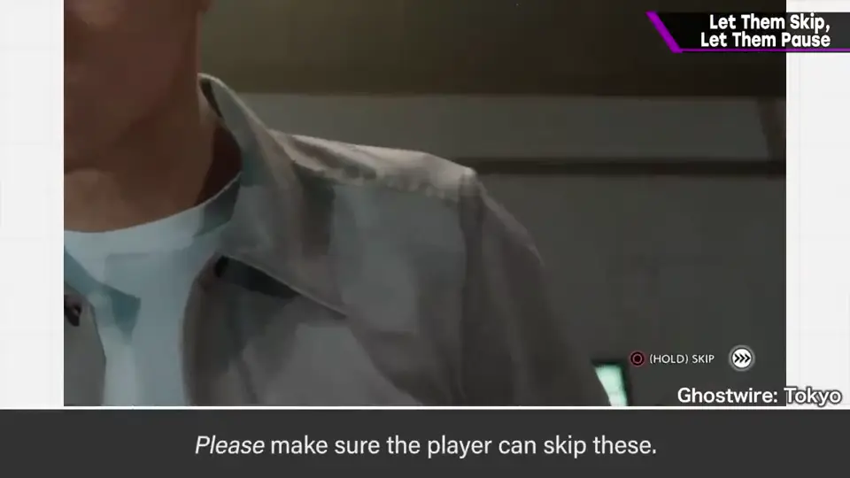
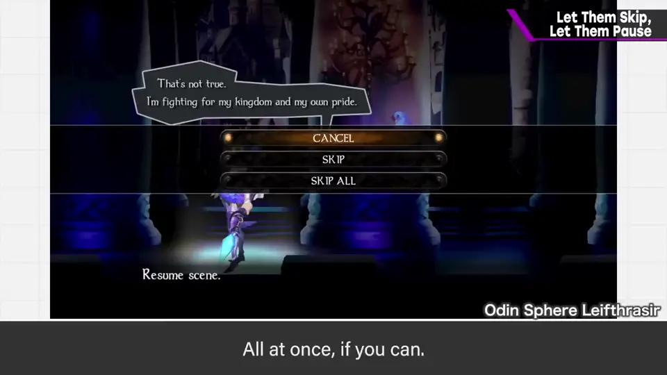
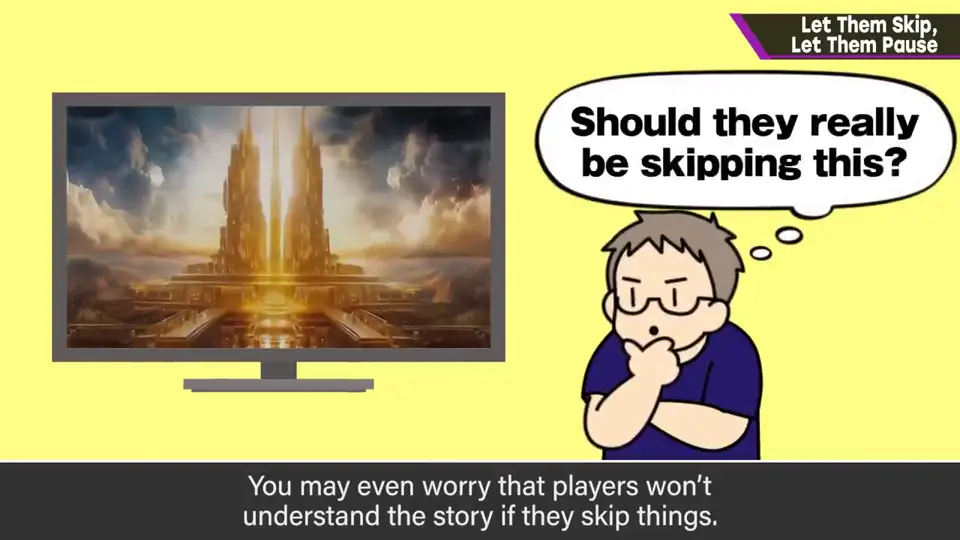
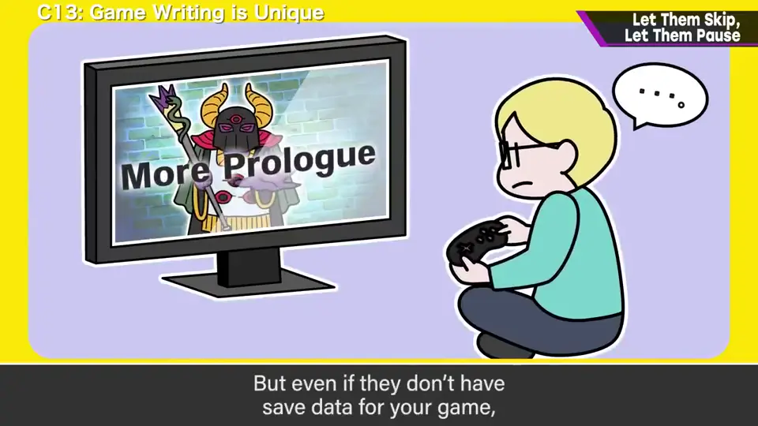
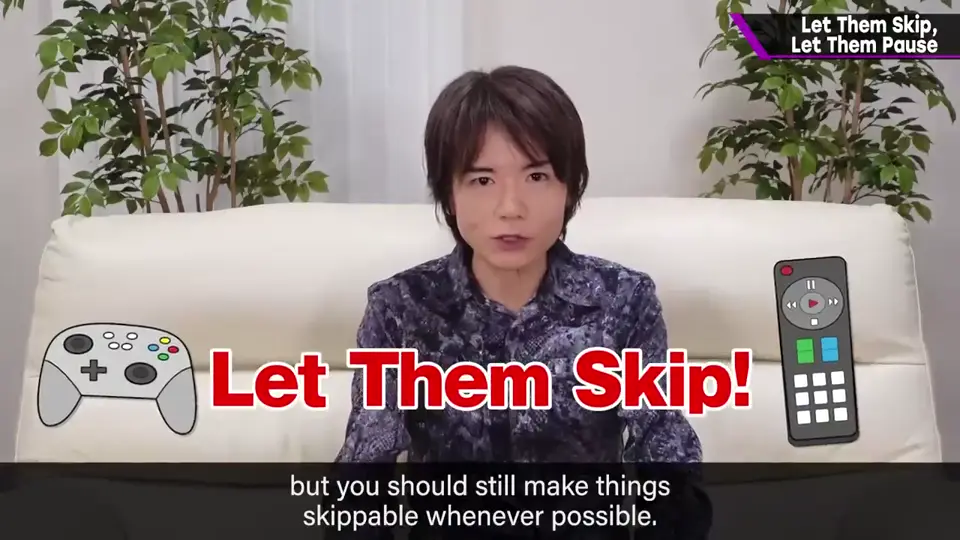
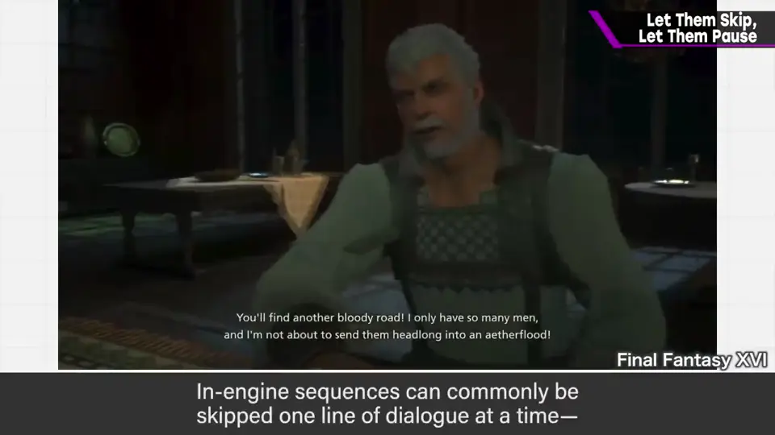
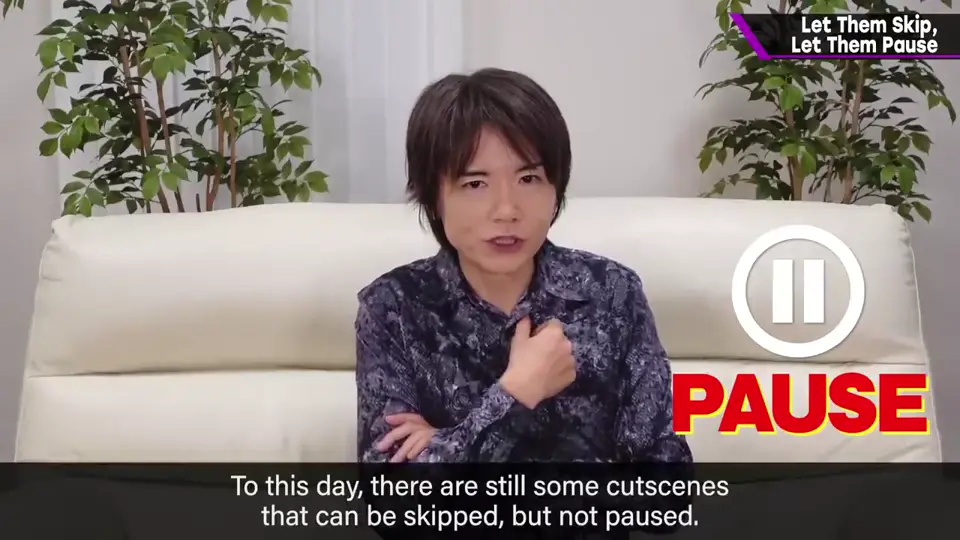
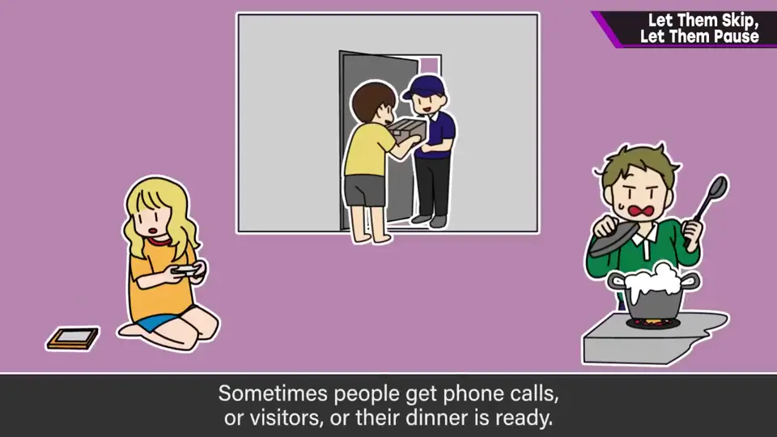
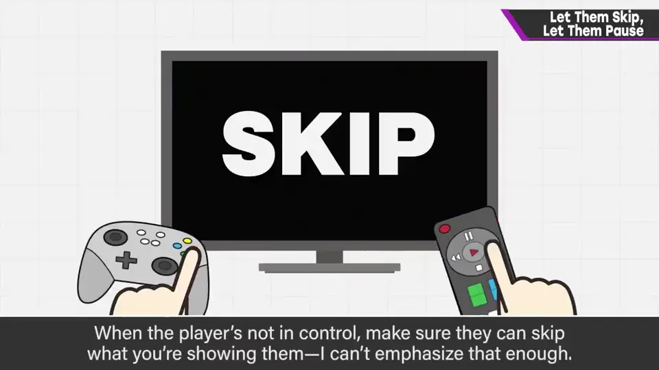

速览
公司标志、开场动画、幕间演出、过场……游戏里有很多玩家没在玩的瞬间，这些一定要能跳过，尽可能、最好一次全部跳过。作为作者，你也许希望大家看完倾注心血的演出，担心跳过后剧情看不懂；但就算没有存档数据，玩家也不一定是第一次看。影像作品不能部分快进或跳过，本身就是不便。游戏不能一概而论，总之能跳的地方都让它能跳。标志可能因指南或规定不能跳过，但那早就不流行了——定规定的人也应以可跳过为前提来设定。实机演出现在主流是按一句台词为单位跳过，若能应用到预渲染影片也更好。另外，过场必须能暂停：至今还有只能跳过、不能暂停的影片，那不是现代做法。来电话、来客人、饭做好了，停手的理由数不胜数。网游的进度另当别论。他说在这里强调一下，也许将来不能跳过的游戏就会少一点。
1. 能跳就让它跳 0:03
公司标志、开场动画、幕间、演出……游戏里有很多玩家没在操作的时刻。


2. 担心玩家看不懂？ 0:24
作为制作者，你也许希望玩家看完倾注心血的演出，担心跳过后剧情看不懂。


但即使没有存档数据，那个人也不一定是第一次看。
- 影像作品不能部分快进或跳过，本身就很不方便。
- 游戏不能用同一把尺子衡量，但总之能跳的地方都要能跳。

3. 标志与规定 1:00
公司标志等也许因指南或规定被设为不能跳过，但那早就不流行了。
4. 按台词跳过，也适用于影片 1:10
实机演出现在的主流是按台词为单位跳过；如果能把这一做法也用在过场影片上就更好。

5. 过场必须能暂停 1:21
过场影片一定要能暂停。至今仍有只能跳过、不能暂停的影片，但那不是现代做法。


6. 总结 1:56
不在玩的时候展示给玩家的东西，一定要能跳过——他想在这里特别强调。也许这样，将来不能跳过的游戏就会少一些。

自测题
1. 「跳过后玩家看不懂剧情」这一顾虑为何不成立？
即使没有存档，玩家也不一定是第一次看；而且不能跳过本身就是不便。 0:36
2. 对于因规定不能跳过的公司标志，樱井怎么看？
那已不流行；制定规定的人也应以可跳过为前提。 1:02
3. 除了跳过，过场影片还必须具备什么？为什么？
必须能暂停；来电、来客、饭好了等停手理由太多。 1:21